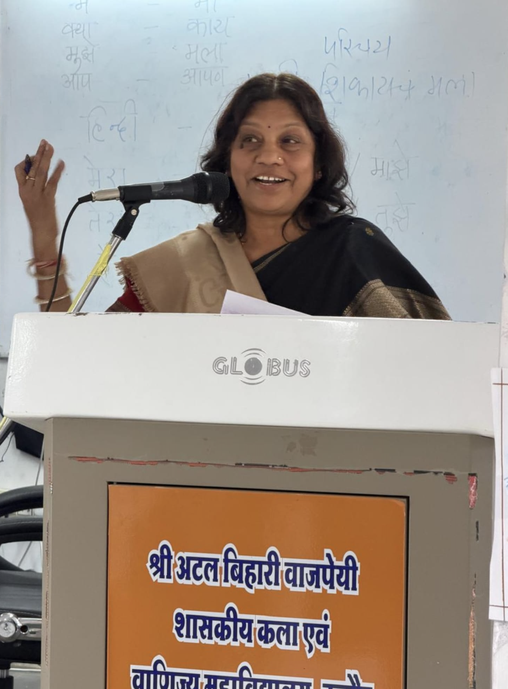

Associate Professor of Economics
Prime Minister College of Excellence, Shri Atal Bihari Vajpayee Government Arts & Commerce College (PMCoE), Indore, Madhya Pradesh, India
Affiliated to Devi Ahilya Vishwavidyalaya, Indore
Dr. Alka Jain is an Associate Professor of Economics at the prestigious Shri Atal Bihari Vajpayee Government Arts & Commerce College (Prime Minister's College of Excellence), Indore, one of the leading government institutions in Madhya Pradesh. With over three decades of dedicated teaching and research experience since 1994, she has established herself as a prolific scholar in Economics with over 100 research publications spanning macroeconomics, Indian foreign trade policy, value-based education, tribal development, skill development, and the Indian knowledge tradition (Bhartiya Gyan Parampara).
She earned her Ph.D. in Economics in 2016 and was promoted to Associate Professor through the UGC Career Advancement Scheme in 2015. She actively contributes to the academic community through conference participation, seminar organization, research paper presentations, and institutional governance. Her work bridges contemporary economic challenges with India's cultural and philosophical heritage, reflecting a deep commitment to holistic education and national development.
Analysis of India's evolving trade landscape post-liberalization — export promotion strategies, exchange rate dynamics, trade barriers, and India's positioning in global markets.
Study of economic growth patterns, FDI inflows, employment generation, labour migration, and inclusive development strategies with focus on Madhya Pradesh and tribal regions.
Research on micro, small and medium enterprises in the era of globalization, skill formation, vocational education, and entrepreneurial development in India.
Exploration of communication approaches in Indian value-based education, integrating traditional methods (storytelling, moral instruction) with modern digital pedagogy for holistic student development.
Study of India's ancient knowledge tradition — Vedic philosophy, Ayurveda, Yoga, and their relevance to the National Education Policy 2020 and contemporary academic frameworks.
Investigation of tribal health and healthcare initiatives, agricultural development in tribal districts, poverty dynamics, and sustainable economic growth in Madhya Pradesh.
Dr. Jain has authored over 100 research papers published in peer-reviewed journals, UGC-listed journals, edited book volumes, and conference proceedings. Below is a selection of recent publications from the academic year 2024–25.
* The above list represents recent publications from 2024–25 only. Dr. Jain's full publication record includes 100+ papers across leading economics journals, national seminars, and edited volumes spanning topics in trade policy, development economics, education, and Indian knowledge systems.
Dr. Jain teaches Economics at both the undergraduate and postgraduate levels, maintaining an excellent teaching attendance record of approximately 83.63% across all assigned classes. Her courses span microeconomics, macroeconomics, Indian economy, and development economics.
Advanced coursework in economic theory, Indian economic policy, international trade, and quantitative methods. Lectures and seminar-based instruction for postgraduate scholars.
Foundational and intermediate courses in micro and macroeconomics, Indian economy, and development economics for undergraduate students across multiple sections.
Responsibilities include university question paper setting, evaluation and grading of answer notebooks, and invigilation duties for college and university examinations.
Actively involved in guiding undergraduate research projects and mentoring students in academic writing, research methodology, and career development.
PMCoE, Shri Atal Bihari Vajpayee Govt. Arts & Commerce College, Indore (Under IQAC)
Participant — Certified
Dept. of History, PMCoE, Indore — Funded by Dept. of Higher Education
Paper Presenter / Participant
School of Economics, Devi Ahilya Vishwavidyalaya, Indore — Organized with UGC-SAP, CPEPA, STRIDE, RIS, PathS
Registered Delegate & Participant
Shri Atal Bihari Vajpayee Govt. Arts & Commerce College, Indore — Under IQAC & Sanskrit Department, M.P. Government
Research Paper Presenter
Dept. of Hindi, Govt. Girls PG College, Ratlam (M.P.) — In association with IQAC
Paper Presenter — शिक्षा नीति (Education Policy)
Government College, Khilchipur (M.P.) — Sponsored by Dept. of Higher Education, Govt. of Madhya Pradesh
Paper Presenter / Participant
Active role in library committee, anti-ragging cell, women grievance cell, college event management, and institutional planning.
Involvement in plantation drives, student co-curricular programs, and self-defense training coordination for women students (Oct 2024).
"Education is not just about academic excellence, but the cultivation of moral, ethical, and spiritual values in students — aiming for their holistic development."
— Dr. Alka Jain